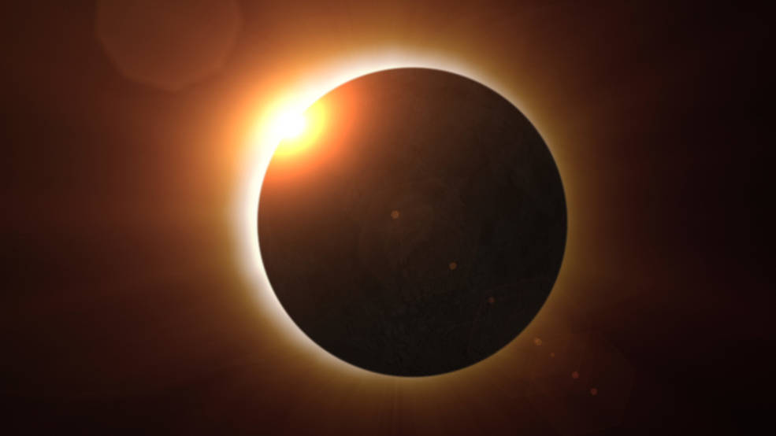

Lunar & Solar Eclipses

Click to see lunar eclipse
Traditionally, eclipses are divided into two major types: solar and lunar. Solar eclipses occur when the Moon passes between Earth and the Sun, leaving a moving region of shadow on Earth's surface. Lunar eclipses occur when Earth passes between the Sun and the Moon, casting a shadow on the Moon. Click the button below to see more facts.
Click to see facts